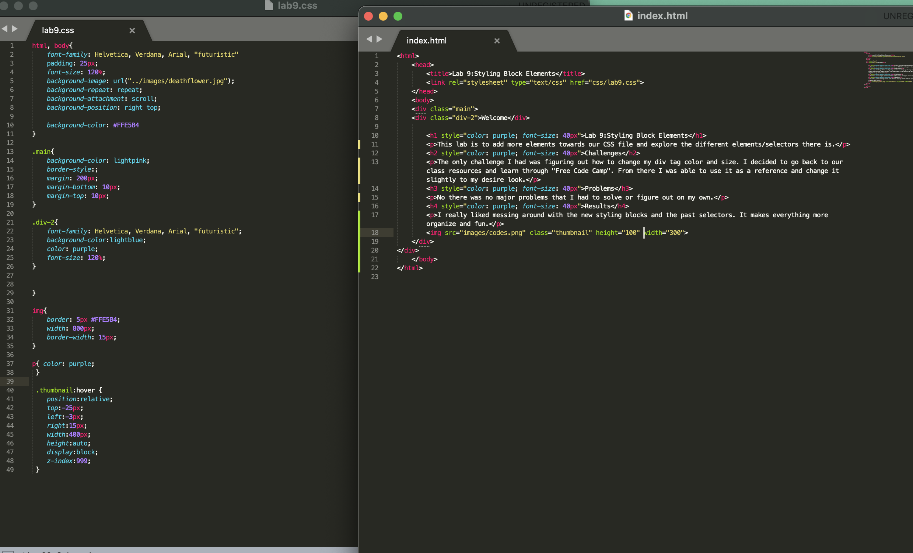

Welcome
Lab 9:Styling Block Elements
This lab is to add more elements towards our CSS file and explore the different elements/selectors there is.
Challenges
The only challenge I had was figuring out how to change my div tag color and size. I decided to go back to our class resources and learn through "Free Code Camp". From there I was able to use it as a reference and change it slightly to my desire look.
Problems
No there was no major problems that I had to solve or figure out on my own.
Results
I really liked messing around with the new styling blocks and the past selectors. It makes everything more organize and fun.
